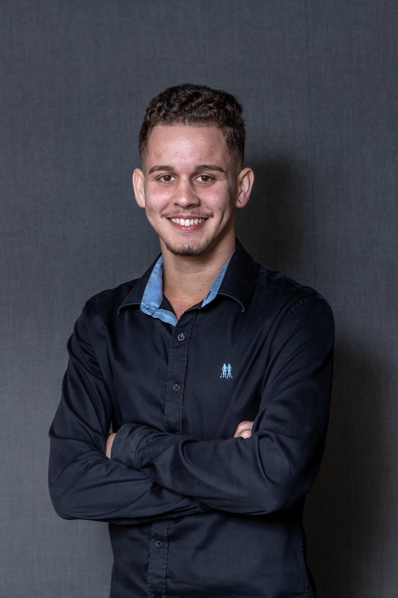

Gustavo Souza Lopes
RM 575057 · Turma 1TDSPT
Conheça os estudantes que desenvolveram o projeto para a Global Solution da FIAP.
Cada integrante contribuiu para transformar a ideia de economia circular urbana em um protótipo funcional.
RM 575057 · Turma 1TDSPT
RM 575084 · Turma 1TDSPT

RM 575222 · Turma 1TDSPT
RM 575391 · Turma 1TDSPT
RM 576621 · Turma 1TDSPT
Envie dúvidas, sugestões ou propostas de parceria pelo formulário de contato.